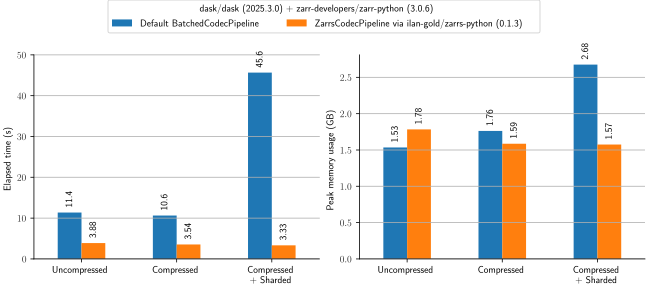

Introduction
note
🚧 This book is under construction!
zarrs - A Rust Library for the Zarr Storage Format
zarrs is a Rust library for the Zarr V2 and Zarr V3 array storage formats.
If you don't know what Zarr is, check out:
- the official Zarr website: zarr.dev, and
- the Zarr V3 specification.
zarrs was originally designed exclusively as a Rust library for Zarr V3.
However, it now supports a V3 compatible subset of Zarr V2, and has Python and C/C++ bindings.
This book focuses mostly on the Rust implementation.
Using zarrs with zarr-python
is the reference Python Zarr implementation.
The zarrs Python bindings expose a high-performance codec pipeline to
zarr-python that uses zarrs under the hood.
There is no need to learn a new API and it is supported by downstream libraries like dask.
tip
Skip to the Python Bindings Chapter if you are not interested in the Rust library.
🚀 zarrs is Fast
The repository includes benchmarks of
zarrs against other Zarr V3 implementations.
Check out the benchmarks below that measure the time to round trip a \(1024x2048x2048\) uint16 array encoded in various ways:


More information on these benchmarks can be found in the repository.
Installation
Prerequisites
The most recent zarrs requires Rust version 
You can check your current Rust version by running:
rustc --version
If you don’t have Rust installed, follow the official Rust installation guide.
Some optional zarrs codecs require:
These are typically available through package managers on Linux, Homebrew on Mac, etc.
Adding zarrs to Your Rust Library/Application
zarrs is a Rust library.
To use it as a dependency in your Rust project, add it to your Cargo.toml file:
[dependencies]
zarrs = "18.0" # Replace with the latest version
The latest version is  .
See crates.io for a full list of versions.
.
See crates.io for a full list of versions.
To use the latest development release:
[dependencies]
zarrs = { git = "https://github.com/LDeakin/zarrs.git" }
The Cargo reference has more information on git repository dependencies.
Crate Features
zarrs has a number of features for stores, codecs, or APIs, many of which are enabled by default.
The below example demonstrates how to disable default features and explicitly enable required features:
[dependencies.zarrs]
version = "18.0"
default-features = false
features = ["filesystem", "blosc"]
See zarrs (docs.rs) - Crate Features for an up-to-date list of all available features.
zarrs Crates
Some zarrs functionality (e.g. additional stores, bindings, etc.) are in separate crates.
graph LR
subgraph Core
zarrs_metadata[zarrs_metadata <br> zarrs::metadata] --> zarrs
zarrs_storage[zarrs_storage <br> zarrs::storage] --> zarrs
end
subgraph Stores
direction LR
zarrs_filesystem[zarrs_filesystem <br> zarrs::filesystem]
zarrs_object_store
zarrs_opendal
zarrs_http
zarrs_icechunk
zarrs_zip
end
Stores --> zarrs_storage
subgraph Bindings
direction LR
zarrs_ffi
zarrs-python
end
zarrs --> Bindings
subgraph CLI Tools
zarrs --> zarrs_tools
end
subgraph metadata_conventions[Zarr Metadata Conventions]
ome_zarr_metadata --> zarrs_tools
end
Core Crates
zarrs 


The core library for manipulating Zarr hierarchies.
zarrs_metadata 


Provides Zarr V2 and V3 metadata serialisation and deserialisation.
If you are just interested in manipulating Zarr metadata, this crate may be relevant.
note
This crate is re-exported in zarrs as zarrs::metadata.
zarrs_storage 


The storage API for zarrs.
Custom store implementations only need to depend on zarrs_storage.
note
This crate is re-exported in zarrs as zarrs::storage.
Store Crates
The Stores chapter details the various types of stores and their associated crates.
Bindings
zarrs_ffi 


A subset of zarrs exposed as a C/C++ API.
This crate is detailed in the C/C++ Bindings chapter.
zarrs-python 


A CodecPipeline for the zarr Python reference implementation that uses zarrs.
This crate is detailed in the Python Bindings chapter.
CLI Tools
zarrs_tools 


Various tools for creating and manipulating Zarr v3 data with the zarrs rust crate.
This crate is detailed in the zarrs_tools chapter.
Zarr Metadata Conventions
ome_zarr_metadata 


A Rust library for OME-Zarr (previously OME-NGFF) metadata.
OME-Zarr, formerly known as OME-NGFF (Open Microscopy Environment Next Generation File Format), is a specification designed to support modern scientific imaging needs. It is widely used in microscopy, bioimaging, and other scientific fields requiring high-dimensional data management, visualisation, and analysis.
Zarr Stores
A Zarr store is a system that can be used to store and retrieve data from a Zarr hierarchy. For example: a filesystem, HTTP server, FTP server, Amazon S3 bucket, etc. A store implements a key/value store interface for storing, retrieving, listing, and erasing keys.
The Zarr V3 storage API is detailed here in the Zarr V3 specification.
The Sync and Async API
Zarr Groups and Arrays are the core components of a Zarr hierarchy.
In zarrs, both structures have both a synchronous and asynchronous API.
The applicable API depends on the storage that the group or array is created with.
Async API methods typically have an async_ prefix.
In subsequent chapters, async API method calls are shown commented out below their sync equivalent.
warning
The async API is still considered experimental, and it requires the async feature.
Synchronous Stores
Memory

MemoryStore is a synchronous in-memory store available in the zarrs_storage crate (re-exported as zarrs::storage).
#![allow(unused)] fn main() { use zarrs::storage::ReadableWritableListableStorage; use zarrs::storage::store::MemoryStore; let store: ReadableWritableListableStorage = Arc::new(MemoryStore::new()); }
Note that in-memory stores do not persist data, and they are not suited to distributed (i.e. multi-process) usage.
Filesystem


FilesystemStore is a synchronous filesystem store available in the zarrs_filesystem crate (re-exported as zarrs::filesystem with the filesystem feature).
#![allow(unused)] fn main() { use zarrs::storage::ReadableWritableListableStorage; use zarrs::filesystem::FilesystemStore; let base_path = "/"; let store: ReadableWritableListableStorage = Arc::new(FilesystemStore::new(base_path)); }
The base path is the root of the filesystem store. Node paths are relative to the base path.
The filesystem store also has a new_with_options constructor.
Currently the only option available for filesystem stores is whether or not to enable direct I/O on Linux.
HTTP


HTTPStore is a read-only synchronous HTTP store available in the zarrs_http crate.
#![allow(unused)] fn main() { use zarrs::storage::ReadableStorage; use zarrs_http::HTTPStore; let http_store: ReadableStorage = Arc::new(HTTPStore::new("http://...")?); }
note
The HTTP stores provided by object_store and opendal (see below) provide a more comprehensive feature set.
Asynchronous Stores
object_store


The object_store crate is an async object store library for interacting with object stores.
Supported object stores include:
- AWS S3
- Azure Blob Storage
- Google Cloud Storage
- Local files
- Memory
- HTTP/WebDAV Storage
- Custom implementations
zarrs_object_store::AsyncObjectStore wraps object_store::ObjectStore stores.
#![allow(unused)] fn main() { use zarrs::storage::::AsyncReadableStorage; use zarrs_object_store::AsyncObjectStore; let options = object_store::ClientOptions::new().with_allow_http(true); let store = object_store::http::HttpBuilder::new() .with_url("http://...") .with_client_options(options) .build()?; let store: AsyncReadableStorage = Arc::new(AsyncObjectStore::new(store)); }
OpenDAL


The opendal crate offers a unified data access layer, empowering users to seamlessly and efficiently retrieve data from diverse storage services.
It supports a huge range of services and layers to extend their behaviour.
zarrs_object_store::AsyncOpendalStore wraps opendal::Operator.
#![allow(unused)] fn main() { use zarrs::storage::::AsyncReadableStorage; use zarrs_opendal::AsyncOpendalStore; let builder = opendal::services::Http::default().endpoint("http://..."); let operator = opendal::Operator::new(builder)?.finish(); let store: AsyncReadableStorage = Arc::new(AsyncOpendalStore::new(operator)); }
note
Some opendal stores can also be used in a synchronous context with zarrs_object_store::OpendalStore, which wraps opendal::BlockingOperator.
Icechunk


icechunk is a transactional storage engine for Zarr designed for use on cloud object storage.
It enables git-like functionality for array data.
See an up-to-date example at https://github.com/LDeakin/zarrs_icechunk.
Storage Adapters
Storage adapters can be layered on top of stores to change their functionality.
Zip


A storage adapter for zip files.
#![allow(unused)] fn main() { use zarrs_storage::StoreKey; use zarrs_filesystem::FilesystemStore; use zarrs_zip::ZipStorageAdapter; let fs_root = PathBuf::from("/path/to/a/directory"); let fs_store = Arc::new(FilesystemStore::new(&fs_root)?); let zip_key = StoreKey::new("zarr.zip")?; let zip_store = Arc::new(ZipStorageAdapter::new(fs_store, zip_key)?); // or ZipStorageAdapter::new_with_path }
Async to Sync
Asynchronous stores can be used in a synchronous context with the zarrs::storage::AsyncToSyncStorageAdapter.
The AsyncToSyncBlockOn trait must be implemented for a runtime or runtime handle in order to block on futures.
See the below tokio example:
#![allow(unused)] fn main() { use zarrs::storage::storage_adapter::async_to_sync::AsyncToSyncBlockOn; struct TokioBlockOn(tokio::runtime::Runtime); // or handle impl AsyncToSyncBlockOn for TokioBlockOn { fn block_on<F: core::future::Future>(&self, future: F) -> F::Output { self.0.block_on(future) } } }
#![allow(unused)] fn main() { use zarrs::storage::::{AsyncReadableStorage, ReadableStorage}; // Create an async store as normal let builder = opendal::services::Http::default().endpoint(path); let operator = opendal::Operator::new(builder)?.finish(); let storage: AsyncReadableStorage = Arc::new(AsyncOpendalStore::new(operator)); // Create a tokio runtime and adapt the store to sync let block_on = TokioBlockOn(tokio::runtime::Runtime::new()?); let store: ReadableStorage = Arc::new(AsyncToSyncStorageAdapter::new(storage, block_on)) }
warning
Many async stores are not runtime-agnostic (i.e. only support tokio).
Usage Log
The zarrs::storage::UsageLogStorageAdapter logs storage method calls.
It is intended to aid in debugging and optimising performance by revealing storage access patterns.
#![allow(unused)] fn main() { let store = Arc::new(MemoryStore::new()); let log_writer = Arc::new(Mutex::new( // std::io::BufWriter::new( std::io::stdout(), // ) )); let store = Arc::new(UsageLogStorageAdapter::new(store, log_writer, || { chrono::Utc::now().format("[%T%.3f] ").to_string() })); }
Performance Metrics
The zarrs::storage::PerformanceMetricsStorageAdapter accumulates metrics, such as bytes read and written.
It is intended to aid in testing by allowing the application to validate that metrics (e.g., bytes read/written, total read/write operations) match expected values for specific operations.
#![allow(unused)] fn main() { let store = Arc::new(MemoryStore::new()); let store = Arc::new(PerformanceMetricsStorageAdapter::new(store)); assert_eq!(store.bytes_read(), ...); }
Zarr Groups
A group is a node in a Zarr hierarchy that may have child nodes (arrays or groups).

Each array or group in a hierarchy is represented by a metadata document, which is a machine-readable document containing essential processing information about the node. For a group, the metadata document contains the Zarr Version and optional user attributes.
Opening an Existing Group
An existing group can be opened with Group::open (or async_open):
let group = Group::open(store.clone(), "/group")?;
// let group = Group::async_open(store.clone(), "/group").await?;
note
These methods will open a Zarr V2 or Zarr V3 group.
If you only want to open a specific Zarr version, see open_opt and MetadataRetrieveVersion.
Creating Attributes
Attributes are encoded in a JSON object (serde_json::Object).
Here are a few different approaches for constructing a JSON object:
let value = serde_json::json!({
"spam": "ham",
"eggs": 42
});
let attributes: serde_json::Object =
serde_json::json!(value).as_object().unwrap().clone()
let serde_json::Value::Object(attributes) = value else { unreachable!() };
let mut attributes = serde_json::Object::default();
attributes.insert("spam".to_string(), Value::String("ham".to_string()));
attributes.insert("eggs".to_string(), Value::Number(42.into()));
Alternatively, you can encode your attributes in a struct deriving Serialize, and serialize to a serde_json::Object.
Creating a Group with the GroupBuilder
note
The GroupBuilder only supports Zarr V3 groups.
let group = zarrs::group::GroupBuilder::new()
.attributes(attributes)
.build(store.clone(), "/group")?;
group.store_metadata()?;
// group.async_store_metadata().await?;
Note that the /group path is relative to the root of the store.
Remember to Store Metadata!
Group metadata must always be stored explicitly, even if the attributes are empty. Support for implicit groups without metadata was removed long after provisional acceptance of the Zarr V3 specification.
tip
Consider deferring storage of group metadata until child group/array operations are complete. The presence of valid metadata can act as a signal that the data is ready.
Creating a Group from GroupMetadata
Zarr V3
/// Specify the group metadata
let metadata: GroupMetadata =
GroupMetadataV3::new().with_attributes(attributes).into();
/// Create the group and write the metadata
let group =
Group::new_with_metadata(store.clone(), "/group", metadata)?;
group.store_metadata()?;
// group.async_store_metadata().await?;
/// Specify the group metadata
let metadata: GroupMetadataV3 = serde_json::from_str(
r#"{
"zarr_format": 3,
"node_type": "group",
"attributes": {
"spam": "ham",
"eggs": 42
},
"unknown": {
"must_understand": false
}
}"#,
)?;
/// Create the group and write the metadata
let group =
Group::new_with_metadata(store.clone(), "/group", metadata.into())?;
group.store_metadata()?;
// group.async_store_metadata().await?;
Zarr V2
/// Specify the group metadata
let metadata: GroupMetadata =
GroupMetadataV2::new().with_attributes(attributes).into();
/// Create the group and write the metadata
let group = Group::new_with_metadata(store.clone(), "/group", metadata)?;
group.store_metadata()?;
// group.async_store_metadata().await?;
Mutating Group Metadata
Group attributes can be changed after initialisation with Group::attributes_mut:
#![allow(unused)] fn main() { group .attributes_mut() .insert("foo".into(), serde_json::Value::String("bar".into())); group.store_metadata()?; }
Don't forget to store the updated metadata after attributes have been mutated.
Zarr Arrays
An array is a node in a hierarchy that may not have any child nodes.
An array is a data structure with zero or more dimensions whose lengths define the shape of the array. An array contains zero or more data elements all of the same data type.

The following sections will detail the initialisation, reading, and writing of arrays.
Array Initialisation
Opening an Existing Array
An existing array can be opened with Array::open (or async_open):
let array_path = "/group/array";
let array = Array::open(store.clone(), array_path)?;
// let array = Array::async_open(store.clone(), array_path).await?;
note
These methods will open a Zarr V2 or Zarr V3 array.
If you only want to open a specific Zarr version, see open_opt and MetadataRetrieveVersion.
Creating a Zarr V3 Array with the ArrayBuilder
note
The ArrayBuilder only supports Zarr V3 groups.
let array_path = "/group/array";
let array = ArrayBuilder::new(
vec![8, 8], // array shape
DataType::Float32,
vec![4, 4].try_into()?, // regular chunk shape
FillValue::from(ZARR_NAN_F32),
)
// .bytes_to_bytes_codecs(vec![]) // uncompressed
.bytes_to_bytes_codecs(vec![
Arc::new(GzipCodec::new(5)?),
])
.dimension_names(["y", "x"].into())
// .attributes(...)
// .storage_transformers(vec![].into())
.build(store.clone(), array_path)?;
array.store_metadata()?;
// array.async_store_metadata().await?;
tip
The Group Initialisation Chapter has tips for creating attributes.
Remember to Store Metadata!
Array metadata must always be stored explicitly, otherwise an array cannot be opened.
tip
Consider deferring storage of array metadata until after chunks operations are complete. The presence of valid metadata can act as a signal that the data is ready.
Creating a Zarr V3 Sharded Array
The ShardingCodecBuilder is useful for creating an array that uses the sharding_indexed codec.
let mut sharding_codec_builder = ShardingCodecBuilder::new(
vec![4, 4].try_into()? // inner chunk shape
);
sharding_codec_builder.bytes_to_bytes_codecs(vec![
Arc::new(codec::GzipCodec::new(5)?),
]);
let array = ArrayBuilder::new(
...
)
.array_to_bytes_codec(sharding_codec_builder.build_arc())
.build(store.clone(), array_path)?;
array.store_metadata()?;
// array.async_store_metadata().await?;
Creating a Zarr V3 Array from Metadata
An array can be created from ArrayMetadata instead of an ArrayBuilder if needed.
let json: &str = r#"{
"zarr_format": 3,
"node_type": "array",
...
}#";
Full Zarr V3 array JSON example
let json: &str = r#"{
"zarr_format": 3,
"node_type": "array",
"shape": [
10000,
1000
],
"data_type": "float64",
"chunk_grid": {
"name": "regular",
"configuration": {
"chunk_shape": [
1000,
100
]
}
},
"chunk_key_encoding": {
"name": "default",
"configuration": {
"separator": "/"
}
},
"fill_value": "NaN",
"codecs": [
{
"name": "bytes",
"configuration": {
"endian": "little"
}
},
{
"name": "gzip",
"configuration": {
"level": 1
}
}
],
"attributes": {
"foo": 42,
"bar": "apples",
"baz": [
1,
2,
3,
4
]
},
"dimension_names": [
"rows",
"columns"
]
}"#;
/// Parse the JSON metadata
let array_metadata: ArrayMetadata = serde_json::from_str(json)?;
/// Create the array
let array = Array::new_with_metadata(
store.clone(),
"/group/array",
array_metadata.into(),
)?;
array.store_metadata()?;
// array.async_store_metadata().await?;
Alternatively, ArrayMetadataV3 can be constructed with ArrayMetadataV3::new() and subsequent with_ methods:
/// Specify the array metadata
let array_metadata: ArrayMetadata = ArrayMetadataV3::new(
serde_json::from_str("[10, 10]"),
serde_json::from_str(r#"{"name": "regular", "configuration":{"chunk_shape": [5, 5]}}"#)?,
serde_json::from_str(r#""float32""#)?,
serde_json::from_str("0.0")?,
serde_json::from_str(r#"[ { "name": "blosc", "configuration": { "cname": "blosclz", "clevel": 9, "shuffle": "bitshuffle", "typesize": 2, "blocksize": 0 } } ]"#)?,
).with_chunk_key_encoding(
serde_json::from_str(r#"{"name": "default", "configuration": {"separator": "/"}}"#)?,
).with_attributes(
serde_json::from_str(r#"{"foo": 42, "bar": "apples", "baz": [1, 2, 3, 4]}"#)?,
).with_dimension_names(
Some(serde_json::from_str(r#"["y", "x"]"#)?),
)
.into();
/// Create the array
let array = Array::new_with_metadata(
store.clone(),
"/group/array",
array_metadata,
)?;
array.store_metadata()?;
// array.async_store_metadata().await?;
Creating a Zarr V2 Array
The ArrayBuilder does not support Zarr V2 arrays.
Instead, they must be built from ArrayMetadataV2.
/// Specify the array metadata
let array_metadata: ArrayMetadata = ArrayMetadataV2::new(
vec![10, 10], // array shape
vec![5, 5].try_into()?, // regular chunk shape
">f4".into(), // big endian float32
FillValueMetadataV2::NaN, // fill value
None, // compressor
None, // filters
)
.with_dimension_separator(ChunkKeySeparator::Slash)
.with_order(ArrayMetadataV2Order::F)
.with_attributes(attributes.clone())
.into();
/// Create the array
let array = Array::new_with_metadata(
store.clone(),
"/group/array",
array_metadata,
)?;
array.store_metadata()?;
// array.async_store_metadata().await?;
warning
Array::new_with_metadata can fail if Zarr V2 metadata is unsupported by zarrs.
Mutating Array Metadata
The shape, dimension names, attributes, and additional fields of an array are mutable.
Don't forget to write the metadata after mutating array metadata!
The next chapters detail the reading and writing of array data.
Reading Arrays
Overview
Array operations are divided into several categories based on the traits implemented for the backing storage.
This section focuses on the [Async]ReadableStorageTraits methods:
retrieve_chunk_if_existsretrieve_chunkretrieve_chunksretrieve_chunk_subsetretrieve_array_subsetretrieve_encoded_chunkpartial_decoder
Additional methods are offered by extension traits:
ArrayShardedExtandArrayShardedReadableExt: see Reading Sharded ArraysArrayChunkCacheExt: see Chunk Caching
Method Variants
Many retrieve and store methods have multiple variants:
- Standard variants store or retrieve data represented as
ArrayBytes(representing fixed or variable length bytes). _elementssuffix variants can store or retrieve chunks with a known type._ndarraysuffix variants can store or retrieve anndarray::Array(requiresndarrayfeature)._optsuffix variants have aCodecOptionsparameter for fine-grained concurrency control and more.- Variants without the
_optsuffix use defaultCodecOptions. async_prefix variants can be used with async stores (requiresasyncfeature).
Reading a Chunk
Reading and Decoding a Chunk
let chunk_indices: Vec<u64> = vec![1, 2];
let chunk_bytes: ArrayBytes = array.retrieve_chunk(&chunk_indices)?;
let chunk_elements: Vec<f32> =
array.retrieve_chunk_elements(&chunk_indices)?;
let chunk_array: ndarray::ArrayD<f32> =
array.retrieve_chunk_ndarray(&chunk_indices)?;
warning
_element and _ndarray variants will fail if the element type does not match the array data type.
They do not perform any conversion.
Skipping Empty Chunks
Use retrieve_chunk_if_exists to only retrieve a chunk if it exists (i.e. is not composed entirely of the fill value, or has yet to be written to the store):
let chunk_bytes: Option<ArrayBytes> =
array.retrieve_chunk_if_exists(&chunk_indices)?;
let chunk_elements: Option<Vec<f32>> =
array.retrieve_chunk_elements_if_exists(&chunk_indices)?;
let chunk_array: Option<ndarray::ArrayD<f32>> =
array.retrieve_chunk_ndarray_if_exists(&chunk_indices)?;
Retrieving an Encoded Chunk
An encoded chunk can be retrieved without decoding with retrieve_encoded_chunk:
let chunk_bytes_encoded: Option<Vec<u8>> =
array.retrieve_encoded_chunk(&chunk_indices)?;
This returns None if a chunk does not exist.
Parallelism and Concurrency
Codec and Chunk Parallelism
Codecs run in parallel on a threadpool.
Array store and retrieve methods will also run in parallel when they involve multiple chunks.
zarrs will automatically choose where to prioritise parallelism between codecs/chunks based on the codecs and number of chunks.
By default, all available CPU cores will be used (where possible/efficient).
Concurrency can be limited globally with Config::set_codec_concurrent_target or as required using _opt methods with CodecOptions populated with CodecOptions::set_concurrent_target.
Async API Concurrency
This crate is async runtime-agnostic. Async methods do not spawn tasks internally, so asynchronous storage calls are concurrent but not parallel. Codec encoding and decoding operations still execute in parallel (where supported) in an asynchronous context.
Due the lack of parallelism, methods like async_retrieve_array_subset or async_retrieve_chunks do not parallelise over chunks and can be slow compared to the API.
Parallelism over chunks can be achieved by spawning tasks outside of zarrs.
If executing many tasks concurrently, consider reducing the codec concurrent_target.
Reading Chunks in Parallel
The retrieve_chunks methods perform chunk retrieval with chunk parallelism.
Rather than taking a &[u64] parameter of the indices of a single chunk, these methods take an ArraySubset representing the chunks.
Rather than returning a Vec for each chunk, the chunks are assembled into a single output for the entire region they cover:
let chunks = ArraySubset::new_with_ranges(&[0..2, 0..4]);
let chunks_bytes: ArrayBytes = array.retrieve_chunks(&chunks)?;
let chunks_elements: Vec<f32> = array.retrieve_chunks_elements(&chunks)?;
let chunks_array: ndarray::ArrayD<f32> =
array.retrieve_chunks_ndarray(&chunks)?;
retrieve_encoded_chunks differs in that it does not assemble the output.
Chunks returned are in order of the chunk indices returned by chunks.indices().into_iter():
let chunk_bytes_encoded: Vec<Option<Vec<u8>>> =
array.retrieve_encoded_chunks(&chunk_indices, &CodecOptions::default()?);
Reading a Chunk Subset
An ArraySubset represents a subset (region) of an array or chunk.
It encodes a starting coordinate and a shape, and is foundational for many array operations.
The below array subsets are all identical:
let subset = ArraySubset::new_with_ranges(&[2..6, 3..5]);
let subset = ArraySubset::new_with_start_shape(vec![2, 3], vec![4, 2])?;
let subset = ArraySubset::new_with_start_end_exc(vec![2, 3], vec![6, 5])?;
let subset = ArraySubset::new_with_start_end_inc(vec![2, 3], vec![5, 4])?;
The retrieve_chunk_subset methods can be used to retrieve a subset of a chunk:
let chunk_subset: ArraySubset = ...;
let chunk_subset_bytes: ArrayBytes =
array.retrieve_chunk_subset(&chunk_indices, &chunk_subset)?;
let chunk_subset_elements: Vec<f32> =
array.retrieve_chunk_subset_elements(&chunk_indices, &chunk_subset)?;
let chunk_subset_array: ndarray::ArrayD<f32> =
array.retrieve_chunk_subset_ndarray(&chunk_indices, &chunk_subset)?;
It is important to understand what is going on behind the scenes in these methods. A partial decoder is created that decodes the requested subset.
warning
Many codecs do not support partial decoding, so partial decoding may result in reading and decoding entire chunks!
Reading Multiple Chunk Subsets
If multiple chunk subsets are needed from a chunk, prefer to create a partial decoder and reuse it for each chunk subset.
let partial_decoder = array.partial_decoder(&chunk_indices)?;
let chunk_subsets_bytes_a_b: Vec<ArrayBytes> =
partial_decoder.partial_decode(&[chunk_subset_a, chunk_subset_b, ...])?;
let chunk_subsets_bytes_c: Vec<ArrayBytes> =
partial_decoder.partial_decode(&[chunk_subset_c])?;
On initialisation, partial decoders may insert a cache (depending on the codecs). For example, if a codec does not support partial decoding, its output (or an output of one of its predecessors in the codec chain) will be cached, and subsequent partial decoding operations will not access the store.
Reading an Array Subset
An arbitrary subset of an array can be read with the retrieve_chunk methods:
let array_subset: ArraySubset = ...;
let subset_bytes: Vec<u8> =
array.retrieve_array_subset(&array_subset)?;
let subset_elements: Vec<f32> =
array.retrieve_array_subset_elements(&array_subset)?;
let subset_array: ndarray::ArrayD<f32> =
array.retrieve_array_subset_ndarray(&array_subset)?;
Internally, these methods identify the overlapping chunks, call retrieve_chunk / retrieve_chunk_subset with chunk parallelism, and assemble the output.
Reading Inner Chunks (Sharded Arrays)
The sharding_indexed codec enables multiple sub-chunks ("inner chunks") to be stored in a single chunk ("shard").
With a sharded array, the chunk_grid and chunk indices in store/retrieve methods reference the chunks ("shards") of an array.
The ArrayShardedExt trait provides additional methods to Array to query if an array is sharded and retrieve the inner chunk shape.
Additionally, the inner chunk grid can be queried, which is a ChunkGrid where chunk indices refer to inner chunks rather than shards.
The ArrayShardedReadableExt trait adds Array methods to conveniently and efficiently access the data in a sharded array (with _elements and _ndarray variants):
For unsharded arrays, these methods gracefully fallback to referencing standard chunks.
Each method has a cache parameter (ArrayShardedReadableExtCache) that stores shard indexes so that they do not have to be repeatedly retrieved and decoded.
Querying Chunk Bounds
Several convenience methods are available for querying the underlying chunk grid:
chunk_origin: Get the origin of a chunk.chunk_shape: Get the shape of a chunk.chunk_subset: Get theArraySubsetof a chunk.chunk_subset_bounded: Get theArraySubsetof a chunk, bounded by the array shape.chunks_subset/chunks_subset_bounded: Get theArraySubsetof a group of chunks.chunks_in_array_subset: Get the chunks in anArraySubset.
An ArraySubset spanning an array can be retrieved with subset_all.
Iterating Over Chunks / Regions
Iterating over chunks or regions is a common pattern. There are several approaches.
Serial Chunk Iteration
let indices = chunks.indices();
for chunk_indices in indices {
...
}
Parallel Chunk Iteration
let indices = chunks.indices();
chunks.into_par_iter().try_for_each(|chunk_indices| {
...
})?;
warning
Reading chunks in parallel (as above) can use a lot of memory if chunks are large.
The zarrs crate internally uses a macro from the rayon_iter_concurrent_limit crate to limit chunk parallelism where reasonable.
This macro is a simple wrapper over .into_par_iter().chunks(...).<func>.
For example:
let chunk_concurrent_limit: usize = 4;
rayon_iter_concurrent_limit::iter_concurrent_limit!(
chunk_concurrent_limit,
indices,
try_for_each,
|chunk_indices| {
...
}
)?;
Chunk Caching
The standard Array retrieve methods do not perform any chunk caching.
This means that requesting the same chunk again will result in another read from the store.
The ArrayChunkCacheExt trait adds Array retrieve methods that support chunk caching.
Various type of chunk caches are supported (e.g. encoded cache, decoded cache, chunk limited, size limited, thread local, etc.).
See the Chunk Caching section of the Array docs for more information on these methods.
Chunk caching is likely to be effective for remote stores where redundant retrievals are costly. However, chunk caching may not outperform disk caching with a filesystem store. The caches use internal locking to support multithreading, which has a performance overhead.
warning
Prefer not to use a chunk cache if chunks are not accessed repeatedly. Cached retrieve methods do not use partial decoders, and any intersected chunk is fully decoded if not present in the cache.
For many access patterns, chunk caching may reduce performance. Benchmark your algorithm/data.
Reading a String Array
A string array can be read as normal with any of the array retrieve methods.
let chunks_elements: Vec<String> = array.retrieve_chunks_elements(&chunks)?;
let chunks_array: ndarray::ArrayD<String> =
array.retrieve_chunks_ndarray(&chunks)?;
However, this results in a string allocation per element.
This can be avoided by retrieving the bytes directly and converting them to a Vec of string references.
For example:
let chunks_bytes: ArrayBytes = array.retrieve_chunks(&chunks)?;
let (bytes, offsets) = chunks_bytes.into_variable()?;
let string = String::from_utf8(bytes.into_owned())?;
let chunks_elements: Vec<&str> = offsets
.iter()
.tuple_windows()
.map(|(&curr, &next)| &string[curr..next])
.collect();
let chunks_array =
ArrayD::<&str>::from_shape_vec(subset_all.shape_usize(), chunks_elements)?;
Writing Arrays
Array write methods are separated based on two storage traits:
[Async]WritableStorageTraitsmethods perform write operations exclusively, and[Async]ReadableWritableStorageTraitsmethods perform write operations and may perform read operations.
warning
Misuse of [Async]ReadableWritableStorageTraits Array methods can result in data loss due to partial writes being lost.
zarrs does not currently offer a “synchronisation†API for locking chunks or array subsets.
Write-Only Methods
The [Async]WritableStorageTraits grouped methods exclusively perform write operations:
Store a Chunk
let chunk_indices: Vec<u64> = vec![1, 2];
let chunk_bytes: Vec<u8> = vec![...];
array.store_chunk(&chunk_indices, chunk_bytes.into())?;
let chunk_elements: Vec<f32> = vec![...];
array.store_chunk_elements(&chunk_indices, &chunk_elements)?;
let chunk_array = ArrayD::<f32>::from_shape_vec(
vec![2, 2], // chunk shape
chunk_elements
)?;
array.store_chunk_elements(&chunk_indices, chunk_array)?;
tip
If a chunk is written more than once, its element values depend on whichever operation wrote to the chunk last.
Store Chunks
store_chunks (and variants) will dissasemble the input into chunks, and encode and store them in parallel.
let chunks = ArraySubset::new_with_ranges(&[0..2, 0..4]);
let chunks_bytes: Vec<u8> = vec![...];
array.store_chunks(&chunks, chunks_bytes.into())?;
// store_chunks_elements, store_chunks_ndarray...
Store an Encoded Chunk
An encoded chunk can be stored directly with store_encoded_chunk, bypassing the zarrs codec pipeline.
let encoded_chunk_bytes: Vec<u8> = ...;
array.store_encoded_chunk(&chunks, encoded_chunk_bytes.into())?;
tip
Currently, the most performant path for uncompressed writing on Linux is to reuse page aligned buffers via store_encoded_chunk with direct IO enabled for the FilesystemStore.
See zarrs GitHub issue #58 for a discussion of this method.
Read-Write Methods
The [Async]ReadableWritableStorageTraits grouped methods perform write operations and may perform read operations:
These methods perform partial encoding. Codecs that do not support true partial encoding will retrieve chunks in their entirety, then decode, update, and store them.
It is the responsibility of zarrs consumers to ensure:
store_chunk_subsetis not called concurrently on the same chunk, andstore_array_subsetis not called concurrently on array subsets sharing chunks.
Partial writes to a chunk may be lost if these rules are not respected.
Store a Chunk Subset
array.store_chunk_subset_elements::<f32>(
// chunk indices
&[3, 1],
// subset within chunk
&ArraySubset::new_with_ranges(&[1..2, 0..4]),
// subset elements
&[-4.0; 4],
)?;
Store an Array Subset
array.store_array_subset_elements::<f32>(
&ArraySubset::new_with_ranges(&[0..8, 6..7]),
&[123.0; 8],
)?;
Partial Encoding with the Sharding Codec
In zarrs, the sharding_indexed codec is the only codec that supports real partial encoding if the Experimental Partial Encoding option is enabled.
If disabled (default), chunks are always fully decoded and updated before being stored.
To enable partial encoding:
// Set experimental_partial_encoding to true by default
zarrs::config::global_config_mut().set_experimental_partial_encoding(true);
// Manually set experimental_partial_encoding to true for an operation
let mut options = CodecOptions::default();
options.set_experimental_partial_encoding(true);
warning
The asynchronous API does not yet support partial encoding.
This enables Array::store_array_subset, Array::store_chunk_subset, Array::partial_encoder, and variants to use partial encoding for sharded arrays.
Inner chunks can be written in an append-only fashion without reading previously written inner chunks (if their elements do not require updating).
warning
Since partial encoding is append-only for sharded arrays, updating a chunk does not remove the originally encoded data. Make sure to align writes to the inner chunks, otherwise your shards will be much larger than they should be.
Converting Zarr V2 to V3
CLI tool
zarrs_reencode is a CLI tool that supports Zarr V2 to V3 conversion. See the zarrs_reencode section.
Changing the Internal Representation
When an array or group is initialised, it internally holds metadata in the Zarr version it was created with.
To change the internal representation to Zarr V3, call to_v3() on an Array or Group, then call store_metadata() to update the stored metadata.
V2 metadata must be explicitly erased if needed (see below).
note
While zarrs fully supports manipulation of Zarr V2 and V3 hierarchies (with supported codecs, data types, etc.), it only supports forward conversion of metadata from Zarr V2 to V3.
Convert a Group to V3
let group: Group = group.to_v3();
group.store_metadata()?;
// group.async_store_metadata().await?;
group.erase_metadata_opt(MetadataEraseVersion::V2)?;
// group.async_erase_metadata_opt(MetadataEraseVersion::V2).await?;
Convert an Array to V3
let array: Array = array.to_v3()?;
array.store_metadata()?;
// array.async_store_metadata().await?;
array.erase_metadata_opt(MetadataEraseVersion::V2)?;
// array.async_erase_metadata_opt(MetadataEraseVersion::V2).await?;
Note that Array::to_v3() is fallible because some V2 metadata is not V3 compatible.
Writing Versioned Metadata Explicitly
Rather than changing the internal representation, an alternative is to just write metadata with a specified version.
For groups, the store_metadata_opt accepts a GroupMetadataOptions argument.
GroupMetadataOptions currently has only one option that impacts the Zarr version of the metadata.
By default, GroupMetadataOptions keeps the current Zarr version.
To write Zarr V3 metadata:
group.store_metadata_opt(&
GroupMetadataOptions::default()
.with_metadata_convert_version(MetadataConvertVersion::V3)
)?;
// group.async_store_metadata_opt(...).await?;
warning
zarrs does not support converting Zarr V3 metadata to Zarr V2.
Note that the original metadata is not automatically deleted. If you want to delete it:
group.erase_metadata()?;
// group.async_erase_metadata().await?;
tip
The store_metadata methods of Array and Group internally call store_metadata_opt.
Global defaults can be changed, see zarrs::global::Config.
ArrayMetadataOptions has similar options for changing the Zarr version of the metadata.
It also has various other configuration options, see its documentation.
Python Bindings (zarrs-python)
The zarrs-python Python package exposes a high-performance codec pipeline to the zarr reference implementation that uses zarrs under the hood.
There is no need to learn a new API and it is supported by downstream libraries like dask.
zarrs-python implements the ZarrsCodecPipeline.
It can be used by the reference zarr Python implementation (v3.0.0+) for improved performance over the default BatchedCodecPipeline.
warning
zarrs-python is highly experimental and has some limitations compared to the reference implementation.
Enabling zarrs-python
The ZarrsCodecPipeline is enabled as follows:
from zarr import config
import zarrs # noqa: F401
config.set({"codec_pipeline.path": "zarrs.ZarrsCodecPipeline"})
tip
The zarrs-python bindings are located in a repository called zarrs-python, but the Python package is called zarrs.
Downstream libraries that use zarr internally (dask, xarray, etc.) will also use the ZarrsCodecPipeline.
C/C++ Bindings (zarrs_ffi)
zarrs_ffi is a single header library: zarrs.h (API docs).
Currently zarrs_ffi only supports a subset of the zarrs API.
However, it is sufficient for typical reading and writing of Zarr hierarchies.
These bindings are used in production at the Department of Materials Physics, Australian National University, Canberra, Australia.
CMake Quickstart
- Install the Rust compiler (and cargo).
- Put Findzarrs.cmake in your
CMAKE_MODULE_PATH find_package(zarrs <version> REQUIRED COMPONENTS zarrs/bz2)- Replace
<version>with the latest release: (e.g.,
(e.g., 0.8or0.8.4) zarrsis retrieved fromGitHubusing FetchContent and built using corrosion- Components are optional
zarrscodecs
- Replace
- the
zarrs_ffilibrary is available as thezarrs::zarrsorzarrs::zarrs-statictarget
A complete CMake example can be found in zarrs_ffi/examples/cmake_project.
For more comprehensive build instructions, see the zarrs_ffi/README.md.
Example
#include "zarrs.h"
void main() {
// Open a filesystem store pointing to a zarr hierarchy
ZarrsStorage storage = nullptr;
zarrs_assert(zarrsCreateStorageFilesystem("/path/to/hierarchy.zarr", &storage));
// Open an array in the hierarchy
ZarrsArray array = nullptr;
zarrsOpenArrayRW(storage, "/array", metadata, &array);
// Get the array dimensionality
size_t dimensionality;
zarrs_assert(zarrsArrayGetDimensionality(array, &dimensionality));
assert(dimensionality == 2);
// Retrieve the decoded bytes of the chunk at [0, 0]
size_t indices[] = {0, 0};
size_t chunk_size;
zarrs_assert(zarrsArrayGetChunkSize(array, 2, indices, &chunk_size));
std::unique_ptr<uint8_t[]> chunk_bytes(new uint8_t[chunk_size]);
zarrs_assert(zarrsArrayRetrieveChunk(array, 2, indices, chunk_size, chunk_bytes.get()));
}
Complete examples can be found in zarrs_ffi/examples.
zarrs_tools 
zarrs_reencode
Reencode/rechunk a Zarr V2/V3 to a Zarr v3 array.
Installation
zarrs_reencode packaged by default with zarrs_tools and requires no extra features.
Prebuilt Binaries
# Requires cargo-binstall https://github.com/cargo-bins/cargo-binstall
cargo binstall zarrs_tools
From Source
cargo install zarrs_tools
Usage
zarrs_reencode --help
Reencode a Zarr array
Usage: zarrs_reencode [OPTIONS] <PATH_IN> <PATH_OUT>
Arguments:
<PATH_IN>
The zarr array input path or URL
<PATH_OUT>
The zarr array output directory
Options:
-d, --data-type <DATA_TYPE>
The data type as a string
Valid data types:
- bool
- int8, int16, int32, int64
- uint8, uint16, uint32, uint64
- float16, float32, float64, bfloat16
- complex64, complex 128
- r* (raw bits, where * is a multiple of 8)
-f, --fill-value <FILL_VALUE>
Fill value. See <https://zarr-specs.readthedocs.io/en/latest/v3/core/v3.0.html#fill-value>
The fill value must be compatible with the data type.
Examples:
int/uint: 0 100 -100
float: 0.0 "NaN" "Infinity" "-Infinity"
r*: "[0, 255]"
--separator <SEPARATOR>
The chunk key encoding separator. Either . or /
-c, --chunk-shape <CHUNK_SHAPE>
Chunk shape. A comma separated list of the chunk size along each array dimension.
If any dimension has size zero, it will be set to match the array shape.
-s, --shard-shape <SHARD_SHAPE>
Shard shape. A comma separated list of the shard size along each array dimension.
If specified, the array is encoded using the sharding codec.
If any dimension has size zero, it will be set to match the array shape.
--array-to-array-codecs <ARRAY_TO_ARRAY_CODECS>
Array to array codecs.
JSON holding an array of array to array codec metadata.
Examples:
'[ { "name": "transpose", "configuration": { "order": [0, 2, 1] } } ]'
'[ { "name": "bitround", "configuration": { "keepbits": 9 } } ]'
--array-to-bytes-codec <ARRAY_TO_BYTES_CODEC>
Array to bytes codec.
JSON holding array to bytes codec metadata.
Examples:
'{ "name": "bytes", "configuration": { "endian": "little" } }'
'{ "name": "pcodec", "configuration": { "level": 12 } }'
'{ "name": "zfp", "configuration": { "mode": "fixedprecision", "precision": 19 } }'
--bytes-to-bytes-codecs <BYTES_TO_BYTES_CODECS>
Bytes to bytes codecs.
JSON holding an array bytes to bytes codec configurations.
Examples:
'[ { "name": "blosc", "configuration": { "cname": "blosclz", "clevel": 9, "shuffle": "bitshuffle", "typesize": 2, "blocksize": 0 } } ]'
'[ { "name": "bz2", "configuration": { "level": 9 } } ]'
'[ { "name": "crc32c" } ]'
'[ { "name": "gzip", "configuration": { "level": 9 } } ]'
'[ { "name": "zstd", "configuration": { "level": 22, "checksum": false } } ]'
--dimension-names <DIMENSION_NAMES>
Dimension names (optional). Comma separated.
--attributes <ATTRIBUTES>
Attributes (optional).
JSON holding array attributes.
--attributes-append <ATTRIBUTES_APPEND>
Attributes to append (optional).
JSON holding array attributes.
--concurrent-chunks <CONCURRENT_CHUNKS>
Number of concurrent chunks
--ignore-checksums
Ignore checksums.
If set, checksum validation in codecs (e.g. crc32c) is skipped.
--validate
Validate written data
-v, --verbose
Print verbose information, such as the array header
--cache-size <CACHE_SIZE>
An optional chunk cache size (in bytes)
--cache-chunks <CACHE_CHUNKS>
An optional chunk cache size (in chunks)
--cache-size-thread <CACHE_SIZE_THREAD>
An optional per-thread chunk cache size (in bytes)
--cache-chunks-thread <CACHE_CHUNKS_THREAD>
An optional per-thread chunk cache size (in chunks)
--write-shape <WRITE_SHAPE>
Write shape (optional). A comma separated list of the write size along each array dimension.
Use this parameter to incrementally write shards in batches of chunks of the specified write shape.
The write shape defaults to the shard shape for sharded arrays.
This parameter is ignored for unsharded arrays (the write shape is the chunk shape).
Prefer to set the write shape to an integer multiple of the chunk shape to avoid unnecessary reads.
-h, --help
Print help (see a summary with '-h')
-V, --version
Print version
Example
Reencode array.zarr (uint16) with:
- a chunk shape of [32, 32, 32],
- a shard shape of [128, 128, 0]
- the last dimension of the shard shape will match the array shape to the nearest multiple of the chunk shape
- level 9 blosclz compression with bitshuffling
- an input chunk cache with a size of 1GB
zarrs_reencode \
--cache-size 1000000000 \
--chunk-shape 32,32,32 \
--shard-shape 128,128,0 \
--bytes-to-bytes-codecs '[ { "name": "blosc", "configuration": { "cname": "blosclz", "clevel": 9, "shuffle": "bitshuffle", "typesize": 2, "blocksize": 0 } } ]' \
array.zarr array_reencode.zarr
zarrs_ome
Convert a Zarr array to an OME-Zarr 0.5 multiscales hierarchy.
warning
Conformance with the OME-Zarr 0.5 specification is not guaranteed, and input validation is limited. For example, it is possible to create multiscale arrays with nonconformant axis ordering.
zarrs_ome creates a multi-resolution Zarr V3 array through various methods:
- Gaussian image pyramid
- Mean downsampling
- Mode downsampling (for discrete data)
The downsample factor defaults to 2 on all axes (careful if data includes channels!). The physical size and units of the array elements can be set explicitly. The array can be reencoded when output to OME-Zarr.
Installation
zarrs_ome is installed with the ome feature of zarrs_tools.
Prebuilt Binaries
# Requires cargo-binstall https://github.com/cargo-bins/cargo-binstall
cargo binstall zarrs_tools
From Source
cargo install --features=ome zarrs_tools
Usage
zarrs_ome --help
Convert a Zarr array to an OME-Zarr multiscales hierarchy
Usage: zarrs_ome [OPTIONS] <INPUT> <OUTPUT> [DOWNSAMPLE_FACTOR]...
Arguments:
<INPUT>
The input array path
<OUTPUT>
The output group path
[DOWNSAMPLE_FACTOR]...
The downsample factor per axis, comma separated.
Defaults to 2 on each axis.
Options:
--ome-zarr-version <OME_ZARR_VERSION>
[default: 0.5]
Possible values:
- 0.5: https://ngff.openmicroscopy.org/0.5/
--max-levels <MAX_LEVELS>
Maximum number of downsample levels
[default: 10]
--physical-size <PHYSICAL_SIZE>
Physical size per axis, comma separated
--physical-units <PHYSICAL_UNITS>
Physical units per axis, comma separated.
Set to "channel" for a channel axis.
--name <NAME>
OME Zarr dataset name
--discrete
Set to true for discrete data.
Performs majority downsampling instead of creating a Gaussian image pyramid or mean downsampling.
--gaussian-sigma <GAUSSIAN_SIGMA>
The Gaussian "sigma" to apply when creating a Gaussian image pyramid per axis, comma separated.
This is typically set to 0.5 times the downsample factor for each axis. If omitted, then mean downsampling is applied.
Ignored for discrete data.
--gaussian-kernel-half-size <GAUSSIAN_KERNEL_HALF_SIZE>
The Gaussian kernel half size per axis, comma separated.
If omitted, defaults to ceil(3 * sigma).
Ignored for discrete data or if --gaussian-sigma is not set.
--exists <EXISTS>
Behaviour if the output exists
[default: erase]
Possible values:
- erase: Erase the output
- overwrite: Overwrite existing files. Useful if the output includes additional non-zarr files to be preserved. May fail if changing the encoding
- exit: Exit if the output already exists
--group-attributes <GROUP_ATTRIBUTES>
Attributes (optional).
JSON holding group attributes.
-d, --data-type <DATA_TYPE>
The data type as a string
Valid data types:
- bool
- int8, int16, int32, int64
- uint8, uint16, uint32, uint64
- float16, float32, float64, bfloat16
- complex64, complex 128
- r* (raw bits, where * is a multiple of 8)
-f, --fill-value <FILL_VALUE>
Fill value. See <https://zarr-specs.readthedocs.io/en/latest/v3/core/v3.0.html#fill-value>
The fill value must be compatible with the data type.
Examples:
int/uint: 0 100 -100
float: 0.0 "NaN" "Infinity" "-Infinity"
r*: "[0, 255]"
--separator <SEPARATOR>
The chunk key encoding separator. Either . or /
-c, --chunk-shape <CHUNK_SHAPE>
Chunk shape. A comma separated list of the chunk size along each array dimension.
If any dimension has size zero, it will be set to match the array shape.
-s, --shard-shape <SHARD_SHAPE>
Shard shape. A comma separated list of the shard size along each array dimension.
If specified, the array is encoded using the sharding codec.
If any dimension has size zero, it will be set to match the array shape.
--array-to-array-codecs <ARRAY_TO_ARRAY_CODECS>
Array to array codecs.
JSON holding an array of array to array codec metadata.
Examples:
'[ { "name": "transpose", "configuration": { "order": [0, 2, 1] } } ]'
'[ { "name": "bitround", "configuration": { "keepbits": 9 } } ]'
--array-to-bytes-codec <ARRAY_TO_BYTES_CODEC>
Array to bytes codec.
JSON holding array to bytes codec metadata.
Examples:
'{ "name": "bytes", "configuration": { "endian": "little" } }'
'{ "name": "pcodec", "configuration": { "level": 12 } }'
'{ "name": "zfp", "configuration": { "mode": "fixedprecision", "precision": 19 } }'
--bytes-to-bytes-codecs <BYTES_TO_BYTES_CODECS>
Bytes to bytes codecs.
JSON holding an array bytes to bytes codec configurations.
Examples:
'[ { "name": "blosc", "configuration": { "cname": "blosclz", "clevel": 9, "shuffle": "bitshuffle", "typesize": 2, "blocksize": 0 } } ]'
'[ { "name": "bz2", "configuration": { "level": 9 } } ]'
'[ { "name": "crc32c" } ]'
'[ { "name": "gzip", "configuration": { "level": 9 } } ]'
'[ { "name": "zstd", "configuration": { "level": 22, "checksum": false } } ]'
--dimension-names <DIMENSION_NAMES>
Dimension names (optional). Comma separated.
--attributes <ATTRIBUTES>
Attributes (optional).
JSON holding array attributes.
--attributes-append <ATTRIBUTES_APPEND>
Attributes to append (optional).
JSON holding array attributes.
--chunk-limit <CHUNK_LIMIT>
The maximum number of chunks concurrently processed.
By default, this is set to the number of CPUs. Consider reducing this for images with large chunk sizes or on systems with low memory availability.
-h, --help
Print help (see a summary with '-h')
-V, --version
Print version
Examples
Match Input Encoding
zarrs_ome \
--name "ABC-123" \
--physical-size 2.0,2.0,2.0 \
--physical-units micrometer,micrometer,micrometer \
array.zarr array.ome.zarr
[00:00:00/00:00:00] 0 [1243, 1403, 1510] array.ome.zarr/0 rw:0.00/0.76 p:0.00
[00:00:14/00:00:14] 1 [621, 701, 755] array.ome.zarr/1 rw:1.95/0.51 p:12.24
[00:00:01/00:00:01] 2 [310, 350, 377] array.ome.zarr/2 rw:0.62/0.13 p:3.58
[00:00:00/00:00:00] 3 [155, 175, 188] array.ome.zarr/3 rw:0.06/0.01 p:0.26
[00:00:00/00:00:00] 4 [77, 87, 94] array.ome.zarr/4 rw:0.00/0.00 p:0.03
[00:00:00/00:00:00] 5 [38, 43, 47] array.ome.zarr/5 rw:0.00/0.00 p:0.01
[00:00:00/00:00:00] 6 [19, 21, 23] array.ome.zarr/6 rw:0.00/0.00 p:0.01
[00:00:00/00:00:00] 7 [9, 10, 11] array.ome.zarr/7 rw:0.00/0.00 p:0.00
[00:00:00/00:00:00] 8 [4, 5, 5] array.ome.zarr/8 rw:0.00/0.00 p:0.00
[00:00:00/00:00:00] 9 [2, 2, 2] array.ome.zarr/9 rw:0.00/0.00 p:0.00
[00:00:00/00:00:00] 10 [1, 1, 1] array.ome.zarr/10 rw:0.00/0.00 p:0.00
Change Encoding and Downsampling Factor
zarrs_ome \
--name "ABC-123" \
--physical-size 2.0,2.0,2.0 \
--physical-units micrometer,micrometer,micrometer \
--shard-shape 256,256,256 \
--chunk-shape 32,32,32 \
array.zarr array.ome.zarr 1,4,4
[00:00:01/00:00:01] 0 [1243, 1403, 1510] array.ome.zarr/0 rw:25.09/24.50 p:0.00
[00:00:12/00:00:12] 1 [1243, 350, 377] array.ome.zarr/1 rw:5.51/1.21 p:26.79
[00:00:00/00:00:00] 2 [1243, 87, 94] array.ome.zarr/2 rw:0.47/0.13 p:2.97
[00:00:00/00:00:00] 3 [1243, 21, 23] array.ome.zarr/3 rw:0.07/0.00 p:0.16
[00:00:00/00:00:00] 4 [1243, 5, 5] array.ome.zarr/4 rw:0.01/0.00 p:0.02
[00:00:00/00:00:00] 5 [1243, 1, 1] array.ome.zarr/5 rw:0.01/0.00 p:0.00
zarrs_filter
Apply simple image filters (transformations) to an array.
warning
zarrs_filter is highly experimental, has had limited production testing, and is sparsely documented.
The filters currently supported are:
- reencode: Reencode (change encoding, data type, etc.).
- crop: Crop given an offset and shape.
- rescale: Rescale values given a multiplier and offset.
- clamp: Clamp values between a minimum and maximum.
- equal: Return a binary image where the input is equal to some value.
- downsample: Downsample given a stride.
- gradient-magnitude: Compute the gradient magnitude.
- gaussian: Apply a Gaussian kernel.
- summed area table: Compute the summed area table.
- guided filter: Apply a guided filter (edge-preserving noise filter).
Installation
zarrs_filter is installed with the filter feature of zarrs_tools.
Prebuilt Binaries
# Requires cargo-binstall https://github.com/cargo-bins/cargo-binstall
cargo binstall zarrs_tools
From Source
cargo install --features=filter zarrs_tools
Usage
zarrs_filter --help
Apply simple image filters (transformations) to a Zarr array
Usage: zarrs_filter [OPTIONS] [RUN_CONFIG] [COMMAND]
Commands:
reencode Reencode an array
crop Crop an array given an offset and shape
rescale Rescale array values given a multiplier and offset
clamp Clamp values between a minimum and maximum
equal Return a binary image where the input is equal to some value
downsample Downsample an image given a stride
gradient-magnitude Compute the gradient magnitude
gaussian Apply a Gaussian kernel
summed-area-table Compute a summed area table (integral image)
guided-filter Apply a guided filter (edge-preserving noise filter)
replace-value Replace a value with another value
help Print this message or the help of the given subcommand(s)
Arguments:
[RUN_CONFIG]
Path to a JSON run configuration
Options:
--exists <EXISTS>
Behaviour if the output exists
[default: erase]
Possible values:
- erase: Erase the output
- exit: Exit if the output already exists
--tmp <TMP>
Directory for temporary arrays.
If omitted, defaults to the platform-specific temporary directory (e.g. ${TMPDIR}, /tmp, etc.)
--chunk-limit <CHUNK_LIMIT>
The maximum number of chunks concurrently processed.
By default, this is set to the number of CPUs. Consider reducing this for images with large chunk sizes or on systems with low memory availability.
-h, --help
Print help (see a summary with '-h')
-V, --version
Print version
Run zarrs_filter <COMMAND> --help for more information on a specific command.
Examples (CLI)
export ENCODE_ARGS="--shard-shape 256,256,256 --chunk-shape 32,32,32"
zarrs_filter reencode array.zarr array_reenc.zarr ${ENCODE_ARGS}
zarrs_filter reencode array_reenc.zarr array_reenc_int32.zarr ${ENCODE_ARGS} --data-type int32
zarrs_filter reencode array_reenc.zarr array_reenc_float32.zarr ${ENCODE_ARGS} --data-type float32
zarrs_filter crop array_reenc.zarr array_crop.zarr ${ENCODE_ARGS} --data-type float32 256,256,256 768,768,768
zarrs_filter rescale array_reenc.zarr array_rescale.zarr ${ENCODE_ARGS} --data-type float32 2.0 1.0 --fill-value 1.0
zarrs_filter clamp array_reenc.zarr array_clamp.zarr ${ENCODE_ARGS} --data-type float32 5 255 --fill-value 5.0
# zarrs_filter equal array_reenc.zarr array_eq_bool.zarr ${ENCODE_ARGS} --data-type bool 1 --fill-value true
zarrs_filter equal array_reenc.zarr array_eq_u8.zarr ${ENCODE_ARGS} --data-type uint8 1 --fill-value 1
zarrs_filter downsample array_reenc.zarr array_downsample.zarr ${ENCODE_ARGS} --data-type float32 2,2,2
zarrs_filter downsample array_eq_u8.zarr array_downsample_discrete.zarr ${ENCODE_ARGS} --data-type uint8 2,2,2 --discrete
zarrs_filter gradient-magnitude array_reenc.zarr array_gradient_magnitude.zarr ${ENCODE_ARGS} --data-type float32
zarrs_filter gaussian array_reenc.zarr array_gaussian.zarr ${ENCODE_ARGS} --data-type float32 1.0,1.0,1.0 3,3,3
zarrs_filter summed-area-table array_reenc.zarr array_sat.zarr ${ENCODE_ARGS} --data-type int64
zarrs_filter guided-filter array_reenc.zarr array_guided_filter.zarr ${ENCODE_ARGS} --data-type float32 40000 3
zarrs_filter replace-value array_reenc.zarr array_replace.zarr ${ENCODE_ARGS} 65535 0 --fill-value 0
Examples (Config)
zarrs_filter <RUN.json>
run.json
[
{
"_comment": "Rechunk the input",
"filter": "reencode",
"input": "array.zarr",
"output": "$reencode0",
"shard_shape": [256, 256, 256],
"chunk_shape": [32, 32, 32]
},
{
"_comment": "Reencode the previous output as float32, automatically cast the fill value",
"filter": "reencode",
"output": "array_float32.zarr",
"data_type": "float32"
},
{
"filter": "crop",
"input": "$reencode0",
"output": "array_crop.zarr",
"offset": [256, 256, 256],
"shape": [768, 768, 768]
},
{
"filter": "replace_value",
"input": "$reencode0",
"output": "array_replace.zarr",
"value": 65535,
"replace": 0
},
{
"_comment": "Multiply by 7.0/20000.0, casting most values in the image between 0 and 7, store in 8-bit (saturate cast)",
"filter": "rescale",
"input": "$reencode0",
"output": "array_3bit.zarr",
"multiply": 0.00035,
"add": 0.0,
"data_type": "uint8",
"fill_value": 0
},
{
"_comment": "Multiply by 255.0/20000.0, casting most values in the image between 0 and 7, store in 8-bit (saturate cast)",
"filter": "rescale",
"input": "$reencode0",
"output": "array_8bit.zarr",
"multiply": 0.01275,
"add": 0.0,
"data_type": "uint8",
"fill_value": 0
},
{
"_comment": "Clamp the 3-bit output between 2 and 5 and set the fill value to 2",
"filter": "clamp",
"output": "array_3bit_clamp.zarr",
"min": 2,
"max": 5,
"fill_value": 2
},
{
"_comment": "Calculate a binary image where the input is equal to 5 (the max from the clamp). Store as bool",
"filter": "equal",
"input": "array_3bit_clamp.zarr",
"output": "array_clamp_equal_bool.zarr",
"value": 5
},
{
"_comment": "Calculate a binary image where the input is equal to 5 (the max from the clamp). Store as uint8",
"filter": "equal",
"input": "array_3bit_clamp.zarr",
"output": "array_3bit_max.zarr",
"value": 5,
"data_type": "uint8",
"fill_value": 0
},
{
"_comment": "Downsample clamped image by a factor of 2 with mean operator.",
"filter": "downsample",
"input": "array_3bit_clamp.zarr",
"output": "array_3bit_clamp_by2_continuous.zarr",
"stride": [2, 2, 2],
"discrete": false,
"data_type": "float32",
"shard_shape": [128, 128, 128],
"chunk_shape": [32, 32, 32]
},
{
"_comment": "Downsample clamped image by a factor of 2 with mode operator.",
"filter": "downsample",
"input": "array_3bit_clamp.zarr",
"output": "array_3bit_clamp_by2_discrete.zarr",
"stride": [2, 2, 2],
"discrete": true,
"shard_shape": [128, 128, 128],
"chunk_shape": [32, 32, 32]
},
{
"filter": "gradient_magnitude",
"input": "$reencode0",
"output": "array_gradient.zarr"
},
{
"filter": "gaussian",
"input": "$reencode0",
"output": "array_gaussian.zarr",
"sigma": [1.0, 1.0, 1.0],
"kernel_half_size": [3, 3, 3]
},
{
"filter": "summed_area_table",
"input": "$reencode0",
"output": "array_sat.zarr",
"data_type": "float32"
},
{
"filter": "guided_filter",
"input": "$reencode0",
"output": "array_guided_filter.zarr",
"epsilon": 40000.0,
"radius": 3,
"data_type": "float32"
}
]
output
0 reencode
args: {}
encode: {"chunk_shape":[32,32,32],"shard_shape":[256,256,256]}
input: uint16 [1243, 1403, 1510] "array.zarr"
output: uint16 [1243, 1403, 1510] "/tmp/.tmpCbeEcJ/$reencode0bxiFEM"
1 reencode
args: {}
encode: {"data_type":"float32"}
input: uint16 [1243, 1403, 1510] "/tmp/.tmpCbeEcJ/$reencode0bxiFEM"
output: float32 [1243, 1403, 1510] "array_float32.zarr" (overwrite)
2 crop
args: {"offset":[256,256,256],"shape":[768,768,768]}
encode: {}
input: uint16 [1243, 1403, 1510] "/tmp/.tmpCbeEcJ/$reencode0bxiFEM"
output: uint16 [768, 768, 768] "array_crop.zarr" (overwrite)
3 replace_value
args: {"value":65535,"replace":0}
encode: {}
input: uint16 [1243, 1403, 1510] "/tmp/.tmpCbeEcJ/$reencode0bxiFEM"
output: uint16 [1243, 1403, 1510] "array_replace.zarr" (overwrite)
4 rescale
args: {"multiply":0.00035,"add":0.0,"add_first":false}
encode: {"data_type":"uint8","fill_value":0}
input: uint16 [1243, 1403, 1510] "/tmp/.tmpCbeEcJ/$reencode0bxiFEM"
output: uint8 [1243, 1403, 1510] "array_3bit.zarr" (overwrite)
5 rescale
args: {"multiply":0.01275,"add":0.0,"add_first":false}
encode: {"data_type":"uint8","fill_value":0}
input: uint16 [1243, 1403, 1510] "/tmp/.tmpCbeEcJ/$reencode0bxiFEM"
output: uint8 [1243, 1403, 1510] "array_8bit.zarr" (overwrite)
6 clamp
args: {"min":2.0,"max":5.0}
encode: {"fill_value":2}
input: uint8 [1243, 1403, 1510] "array_8bit.zarr"
output: uint8 [1243, 1403, 1510] "array_3bit_clamp.zarr" (overwrite)
7 equal
args: {"value":5}
encode: {}
input: uint8 [1243, 1403, 1510] "array_3bit_clamp.zarr"
output: bool [1243, 1403, 1510] "array_clamp_equal_bool.zarr" (overwrite)
8 equal
args: {"value":5}
encode: {"data_type":"uint8","fill_value":0}
input: uint8 [1243, 1403, 1510] "array_3bit_clamp.zarr"
output: uint8 [1243, 1403, 1510] "array_3bit_max.zarr" (overwrite)
9 downsample
args: {"stride":[2,2,2],"discrete":false}
encode: {"data_type":"float32","chunk_shape":[32,32,32],"shard_shape":[128,128,128]}
input: uint8 [1243, 1403, 1510] "array_3bit_clamp.zarr"
output: float32 [621, 701, 755] "array_3bit_clamp_by2_continuous.zarr" (overwrite)
10 downsample
args: {"stride":[2,2,2],"discrete":true}
encode: {"chunk_shape":[32,32,32],"shard_shape":[128,128,128]}
input: uint8 [1243, 1403, 1510] "array_3bit_clamp.zarr"
output: uint8 [621, 701, 755] "array_3bit_clamp_by2_discrete.zarr" (overwrite)
11 gradient_magnitude
args: {}
encode: {}
input: uint16 [1243, 1403, 1510] "/tmp/.tmpCbeEcJ/$reencode0bxiFEM"
output: uint16 [1243, 1403, 1510] "array_gradient.zarr" (overwrite)
12 gaussian
args: {"sigma":[1.0,1.0,1.0],"kernel_half_size":[3,3,3]}
encode: {}
input: uint16 [1243, 1403, 1510] "/tmp/.tmpCbeEcJ/$reencode0bxiFEM"
output: uint16 [1243, 1403, 1510] "array_gaussian.zarr" (overwrite)
13 summed area table
args: {}
encode: {"data_type":"float32"}
input: uint16 [1243, 1403, 1510] "/tmp/.tmpCbeEcJ/$reencode0bxiFEM"
output: float32 [1243, 1403, 1510] "array_sat.zarr" (overwrite)
14 guided_filter
args: {"epsilon":40000.0,"radius":3}
encode: {"data_type":"float32"}
input: uint16 [1243, 1403, 1510] "/tmp/.tmpCbeEcJ/$reencode0bxiFEM"
output: float32 [1243, 1403, 1510] "array_guided_filter.zarr" (overwrite)
[00:00:02/00:00:02] reencode /tmp/.tmpCbeEcJ/$reencode0bxiFEM rw:34.78/28.90 p:0.00
[00:00:04/00:00:04] reencode array_float32.zarr rw:30.06/76.57 p:14.16
[00:00:00/00:00:00] crop array_crop.zarr rw:3.46/3.34 p:0.00
[00:00:02/00:00:02] replace_value array_replace.zarr rw:26.73/47.32 p:7.25
[00:00:01/00:00:01] rescale array_3bit.zarr rw:18.11/14.43 p:11.55
[00:00:01/00:00:01] rescale array_8bit.zarr rw:23.54/21.99 p:11.08
[00:00:00/00:00:00] clamp array_3bit_clamp.zarr rw:9.70/10.34 p:0.96
[00:00:00/00:00:00] equal array_clamp_equal_bool.zarr rw:10.61/9.32 p:4.56
[00:00:00/00:00:00] equal array_3bit_max.zarr rw:10.29/9.49 p:3.61
[00:00:02/00:00:02] downsample array_3bit_clamp_by2_continuous.zarr rw:7.01/1.95 p:71.76
[00:00:06/00:00:06] downsample array_3bit_clamp_by2_discrete.zarr rw:16.08/1.01 p:168.86
[00:00:20/00:00:20] gradient_magnitude array_gradient.zarr rw:147.16/14.38 p:289.05
[00:00:10/00:00:10] gaussian array_gaussian.zarr rw:36.19/22.01 p:181.06
[00:00:23/00:00:23] summed area table array_sat.zarr rw:190.51/215.68 p:54.39
[00:01:51/00:01:51] guided_filter array_guided_filter.zarr rw:29.57/59.96 p:2427.96
zarrs_validate
Compare the data in two Zarr arrays.
Installation
zarrs_validate is installed with the validate feature of zarrs_tools.
Prebuilt Binaries
# Requires cargo-binstall https://github.com/cargo-bins/cargo-binstall
cargo binstall zarrs_tools
From Source
cargo install --features=validate zarrs_tools
Usage
zarrs_validate --help
Compare the data in two Zarr arrays.
Equality of the arrays is determined by comparing the shape, data type, and data.
Differences in encoding (e.g codecs, chunk key encoding) and attributes are ignored.
Usage: zarrs_validate [OPTIONS] <FIRST> <SECOND>
Arguments:
<FIRST>
The path to the first zarr array
<SECOND>
The path to the second zarr array
Options:
--concurrent-chunks <CONCURRENT_CHUNKS>
Number of concurrent chunks to compare
-h, --help
Print help (see a summary with '-h')
-V, --version
Print version
zarrs_info
Get information about a Zarr array or group.
Installation
zarrs_info is installed with the info feature of zarrs_tools.
Prebuilt Binaries
# Requires cargo-binstall https://github.com/cargo-bins/cargo-binstall
cargo binstall zarrs_tools
From Source
cargo install --features=info zarrs_tools
Usage
zarrs_info --help
Get information about a Zarr array or group.
Outputs are JSON encoded.
Usage: zarrs_info [OPTIONS] <PATH> <COMMAND>
Commands:
metadata Get the array/group metadata
metadata-v3 Get the array/group metadata (interpreted as V3)
attributes Get the array/group attributes
shape Get the array shape
data-type Get the array data type
fill-value Get the array fill value
dimension-names Get the array dimension names
range Get the array data range
histogram Get the array data histogram
help Print this message or the help of the given subcommand(s)
Arguments:
<PATH>
Path to the Zarr input array or group
Options:
--chunk-limit <CHUNK_LIMIT>
The maximum number of chunks concurrently processed.
Defaults to the RAYON_NUM_THREADS environment variable or the number of logical CPUs. Consider reducing this for images with large chunk sizes or on systems with low memory availability.
[default: 24]
-h, --help
Print help (see a summary with '-h')
-V, --version
Print version
Examples
Data Type
zarrs_info array.zarr data-type
{
"data_type": "uint16"
}
Array Shape
zarrs_info array.zarr shape
{
"shape": [
1243,
1403,
1510
]
}
Data Range
zarrs_info array.zarr range
{
"min": 0,
"max": 65535
}
zarrs_binary2zarr
Create a Zarr V3 array from piped binary data.
Installation
zarrs_binary2zarr is installed with the binary2zarr feature of zarrs_tools.
Prebuilt Binaries
# Requires cargo-binstall https://github.com/cargo-bins/cargo-binstall
cargo binstall zarrs_tools
From Source
cargo install --features=binary2zarr zarrs_tools
Example
chameleon_1024x1024x1080.uint16 is an uncompressed binary 3D image split into multiple files with
- (depth, height, width) =
(1080, 1024, 1024) - data type =
uint16
tree --du -h chameleon_1024x1024x1080.uint16
[2.1G] chameleon_1024x1024x1080.uint16
├── [512M] xaa
├── [512M] xab
├── [512M] xac
├── [512M] xad
└── [112M] xae
With the following command, the image is encoded as a zarr array with the sharding codec with a shard shape of (128, 1024, 1024)
- inner chunks in each shard have a chunk shape of
(32, 32, 32) - inner chunks are compressed using the
blosccodec
cat chameleon_1024x1024x1080.uint16/* | \
zarrs_binary2zarr \
--data-type uint16 \
--fill-value 0 \
--separator '.' \
--array-shape 1080,1024,1024 \
--chunk-shape 32,32,32 \
--shard-shape 128,1024,1024 \
--bytes-to-bytes-codecs '[ { "name": "blosc", "configuration": { "cname": "blosclz", "clevel": 9, "shuffle": "bitshuffle", "typesize": 2, "blocksize": 0 } } ]' \
chameleon_1024x1024x1080.zarr
tree --du -h chameleon_1024x1024x1080.zarr
[1.3G] chameleon_1024x1024x1080.zarr
├── [152M] c.0.0.0
├── [157M] c.1.0.0
├── [157M] c.2.0.0
├── [156M] c.3.0.0
├── [152M] c.4.0.0
├── [150M] c.5.0.0
├── [152M] c.6.0.0
├── [152M] c.7.0.0
├── [ 67M] c.8.0.0
└── [1.2K] zarr.json